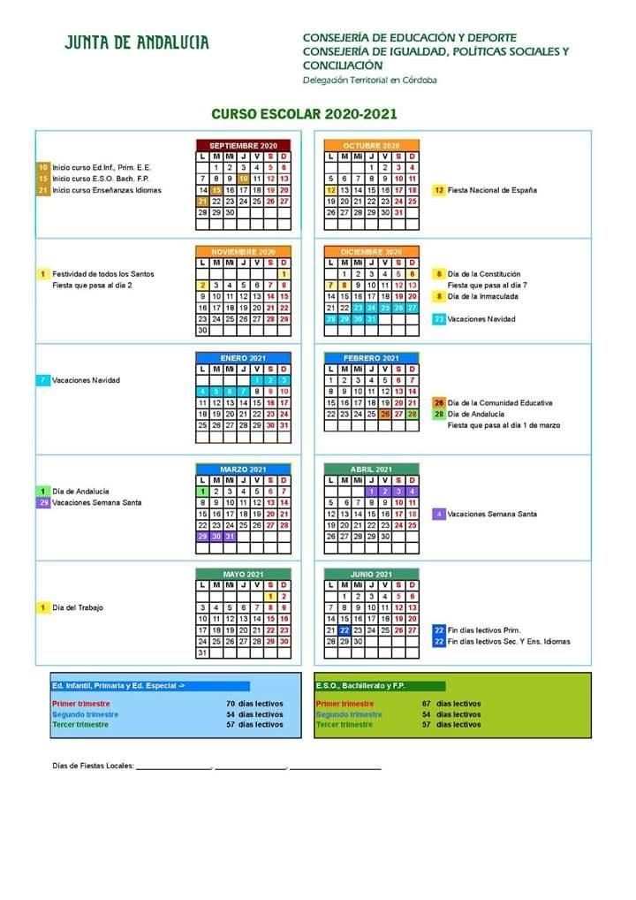

La Selectividad se hará en Córdoba con mascarillas y aulas con un tercio de su capacidad
La Prueba de Evaluación de Bachillerato para el Acceso a la Universidad (PEvAU) en Córdoba, todavía conocida como Selectividad,
se realizará los días 7, 8 y 9 de julio en aulas con un tercio del aforo y con mascarillas higiénicas para estudiantes, profesores,
vigilantes de exámenes y personal de los centros.Así se recoge en la propuesta de protocolo sanitario para la organización y correcto desarrollo de esta evaluación aprobada por la Junta de Andalucía. El documento recoge una serie de consideraciones generales de prevención, así como recomendaciones de higiene relativas a las sedes, a la actividad en sí y a los aspirantes. Entre las instrucciones concretas relacionadas con las instalaciones, se marca reducir la capacidad de las aulas a un tercio, con el máximo de distanciamiento posible entre los estudiantes.
Para el caso de clases con bancadas escalonadas, y cuando sea posible, se aconseja dejar una fila intermedia vacía y situar
los alumnos en forma de W respecto a la fila anterior y posterior ocupada. Además, plantea la posibilidad de que en cada jornada
los alumnos ocupen la misma mesa y aula en los diferentes exámenes del día.
También plantea nombrar un coordinador por universidad, quien establecerá un plan de actuación específico por sede, que contendrá
todas las medidas, de acuerdo con las características de personal, aulas, entradas, aseos y zonas abiertas. Deberán ser sencillas de
comprender y fáciles de llevar a cabo por todo el personal y el alumnado que acudan al examen.
El calendario escolar de Córdoba 2020/2021 contará con cuatro puentes festivos
La vuelta al cole ya tiene fecha: el próximo jueves 10 de septiembre volverán a clase los alumnos de Educación Infantil,
Primaria y Educación Especial. Cinco días después, el 15 de septiembre, se incorporarán los alumnos y alumnas de Educación Secundaria
Obligatoria, Bachillerato y Formación Profesional. Las enseñanzas de idiomas comenzarán el día 21 de septiembre. El curso se prolongará
hasta el martes 22 de junio, según el calendario escolar de Córdoba para el curso 2020/2021
Aún se desconocen los detalles sobre cómo convivirán en las aulas con las medidas necesarias para evitar la propagación del coronavirus
o para controlar la distancia social entre los alumnos. Lo que sí está claro es cómo serán los periodos lectivos. En total son 181 días
lectivos para Educación Infantil, Primaria y Educación Especial y 178 para ESO, Bachillerato y F.P.

Se mantendrán las becas a los alumnos de FP que aplacen sus prácticas
El alumnado de Formación Profesional que haya aplazado de manera voluntaria la realización del módulo de Formación en Centros
de Trabajo (FCT) y de Proyecto, en su caso, en empresas o instituciones en situaciones reales de trabajo al curso escolar 2020-21
no perderá su beca. Así lo ha asegurado en una carta el Ministerio de Educación y Formación Profesional remitida a la Consejería de
Educación y Deportes este viernes. De esta manera, el Ministerio ha atendido la solicitud que hizo el consejero Javier Imbroda en la
pasada Conferencia Sectorial con la finalidad de no perjudicar a estos estudiantes
En concreto, el aplazamiento de la FCT al próximo curso, como medida excepcional de flexibilización en atención al estado de alarma
por el Covid-19, no se considerará, a efectos de reintegro de la beca general del Ministerio, como reducción de las asignaturas/créditos o
módulos matriculados.
Además, el cálculo de las horas superadas, dado que es causa de reitegro de la beca no superar el 50% de las asignaturas,
créditos u horas, se realizará una vez finalizado el periodo de prácticas y de Proyecto, en su caso, objeto de aplazamiento.
Igualmente, la Consejería ampliará el plazo hasta el próximo 22 de mayo para que los estudiantes de FP puedan solicitar la modificación
de su matrícula en función de lo establecido en estas aclaraciones del Ministerio. Para una mayor celeridad, la Consejería informará a
través del sistema Séneca del nuevo plazo para que los alumnos puedan hacer los cambios que procedan. Además se enviará un correo
electrónico a las delegaciones territoriales de Educación y a los correos corporativos de todos los centros sostenidos con fondos públicos.